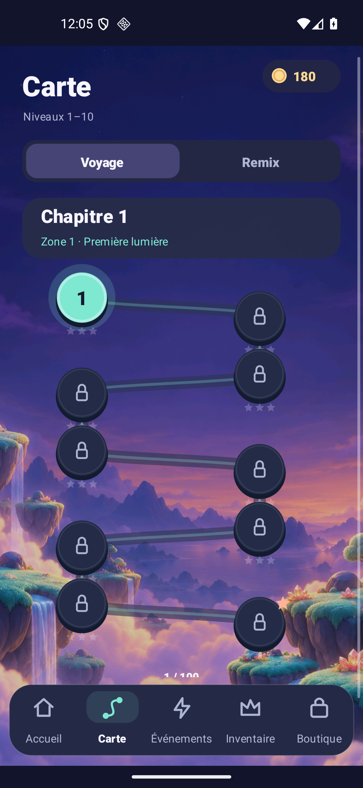
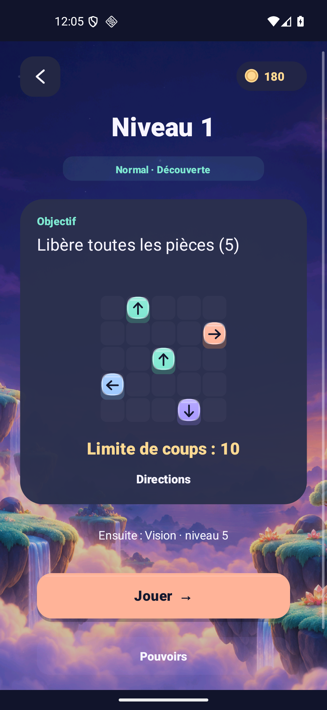
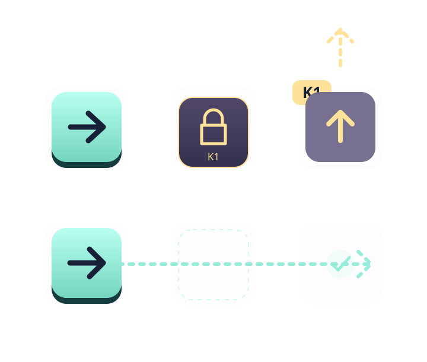
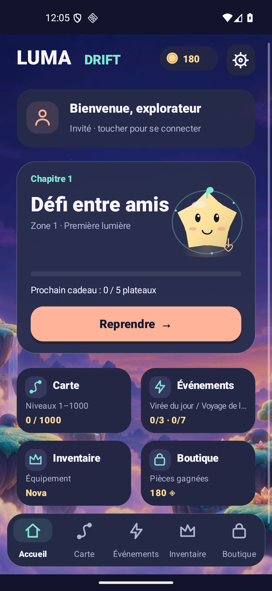
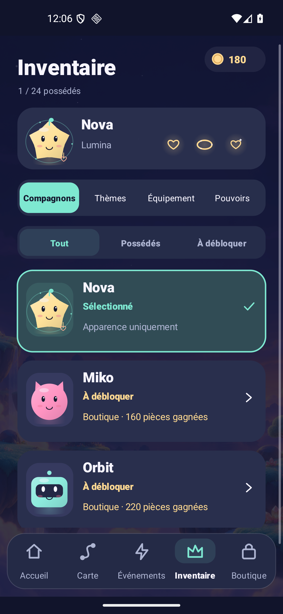

Lis le plateauRead the board
Une pièce suit sa flèche. Le passage et le portail de sortie doivent être ouverts.A piece follows its arrow. The path and exit gate must be open.
LA VERSION 1.6 EST LÀVERSION 1.6 IS HERE
Des flèches à libérer. Des clés à trouver. Un parcours qui change de rythme, et un petit compagnon pour chaque déclic.Arrows to release. Keys to find. A journey that changes pace, and a little companion for every aha moment.
Android 8+ · 1.6.0-rc1 · APK signé · 5,53 MoAndroid 8+ · 1.6.0-rc1 · Signed APK · 5.53 MB
Version de test jouable. La sortie Google Play sera annoncée ici.Playable test release. Google Play launch will be announced here.

 NOVA
NOVA Une nouvelle carte. Un objectif avant de jouer. Un inventaire qui dit tout.A new map. A goal before you play. An inventory that makes sense.
Toutes les nouveautésAll the changes ↗UN OBJECTIF CLAIR. UN COUP BIEN CHOISI.A CLEAR GOAL. A WELL-CHOSEN MOVE.
Le but et la limite de coups s’affichent avant de commencer. Observe les directions, anticipe les portails, puis trouve l’ordre qui libère le plateau.See the goal and move limit before you start. Read the arrows, anticipate the gates, then find the order that clears the board.
Une pièce suit sa flèche. Le passage et le portail de sortie doivent être ouverts.A piece follows its arrow. The path and exit gate must be open.
Chaque plateau a son budget de coups. Les tentatives bloquées et les annulations comptent aussi, sauf protection. Recommencer reste gratuit.Each board has its own move budget. Blocked attempts and Undo also count unless protected. Restarting stays free.
Six pouvoirs se débloquent en avançant. Lis l’effet, vérifie ton stock et confirme avant d’utiliser une charge.Six powers unlock as you progress. Read the effect, check your stock and confirm before using one charge.

UN PARCOURS QUI CHANGE DE RYTHMEA JOURNEY THAT CHANGES PACE
La carte avance par chapitres de dix plateaux. Découverte, entraînement, défi : de nouvelles combinaisons te demandent de regarder autrement le même petit monde.Follow chapters of ten boards on the map. Discover, practise, take a challenge: new combinations ask you to see the same little world differently.
Un nom de difficulté, une règle et le bon nombre de coups : tu sais ce qui t’attend avant de toucher Jouer.A difficulty label, a rule and the action limit: know what awaits before you tap Play.

Règle illustrée · les clés ouvrent leurs passages.Illustrated rule · keys open their matching passages.
LES CLÉS ENTRENT DANS LE PARCOURSKEYS JOIN THE JOURNEY
Dès le niveau 12, découvre les passages scellés. Libère la clé d’un mur pour ouvrir le chemin. Plus loin, clés et portails se combinent : l’ordre devient la solution.Discover sealed passages at level 12. Release a wall’s matching key to open the path. Later, keys and gates combine: order becomes the solution.
Les six défis de l’atelier restent aussi accessibles dans Événements → Passages scellés : coups illimités, sans pouvoirs ni récompenses.The six workshop challenges remain in Events → Sealed passages: unlimited moves, without powers or rewards.
TON COMPAGNON. TON STYLE. TES PROCHAINS DÉFIS.YOUR COMPANION. YOUR STYLE. YOUR NEXT CHALLENGE.
Un accueil qui rassemble tes activités. Des filtres pour retrouver ce que tu possèdes. Et des conditions visibles pour préparer la suite.A home that brings your activities together. Filters to find what you own. Visible unlock conditions to plan what comes next.

Ta session, ton compagnon et tes activités, avec les menus à portée de main.Your session, companion and activities, with navigation close at hand.

Compagnons, thèmes, équipements et pouvoirs. Possédé, équipé ou à débloquer : chaque état est indiqué.Companions, themes, equipment and powers. Owned, equipped or to unlock: each state is labelled.
L’objectif, le plateau et les coups disponibles avant de lancer une nouvelle tentative.The goal, board and available moves before starting a fresh attempt.
Captures réelles de la version Android 1.6. L’accueil reprend un défi déjà en cours. La progression et les équipements restent enregistrés sur l’appareil ; Google ne synchronise pas les sauvegardes du jeu.Actual Android 1.6 captures. Home resumes an existing challenge. Progress and equipment stay on your device; Google sign-in does not sync gameplay saves.
À TON RYTHMEAT YOUR OWN PACE
Le puzzle se joue hors ligne. La connexion Google est facultative, et l’accueil indique l’état de ta session.Play puzzles offline. Google sign-in is optional, and Home shows your session status.
Trois étapes quotidiennes et sept hebdomadaires, avec des objectifs et récompenses visibles.Three daily and seven weekly stages, with visible goals and rewards.
Musique originale, sons, vibrations et mouvement réduit : règle ton ambiance.Original music, sounds, haptics and reduced motion: set your atmosphere.
Un code et l’image du vrai plateau pour proposer le même défi à un ami.A code and a picture of the actual board to offer a friend the same challenge.
PRÊT POUR LE PROCHAIN DÉCLIC ?READY FOR YOUR NEXT AHA?
La version Android 1.6 est disponible en APK signé.Android version 1.6 is available as a signed APK.
Cette version reste en qualification : annonces de test et achats réels désactivés dans l’APK livré. Aucune sortie Google Play n’est annoncée pour le moment.This release is still under qualification: test ads and real purchases disabled in the delivered APK. No Google Play launch is announced yet.